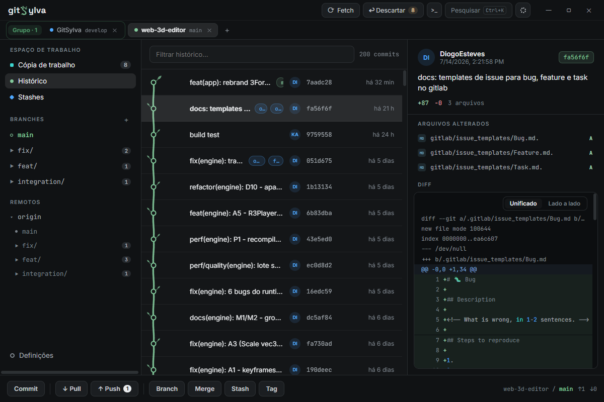

Your history grows like a tree.
GitSylva is a fast, animated desktop git client for Windows. The commit graph is drawn as a living tree — oak leaves, cherry blossom, palm, or plain classic nodes — on top of a full-featured, keyboard-friendly git workflow.

A real git client, with a living history
All the day-to-day plumbing is here: staging, diffs, branches, merges, stashes, tags. It just happens to be beautiful.
Living history
The commit graph grows as an animated tree — four visual styles, recolorable branch palettes, and virtualized rendering that stays smooth past 2,000 commits.
Working copy & diffs
Stage and unstage per file or per hunk. Unified or side-by-side diffs, blame view, per-file-type icons — huge diffs are paginated and capped so nothing ever freezes.
Branches, stashes & tags
Slashed names like feature/x fold into collapsible folders. Stashes preview their files. Merge, rebase and cherry-pick with a persistent conflict banner.
Multi-repository
Keep every repo one click away — tabs across the top or a VS Code-style rail, with color-coded, renamable groups.
Command palette
Ctrl+K searches commits, branches, files, repositories and git actions in one place. Every shortcut is rebindable.
Stability first
Every git operation runs off the UI thread with per-repo write locking. Crashes and panics are captured to a local log, with release-build telemetry.
Four themes, four forests
Pick a mood — plus tree styles, branch palettes, accent colors and fonts, all exportable to a single JSON file.
Classic
Black & white, oak leaves
Batman
Graphite dark
Git Classic
Near-black, vivid
Nipon
White & sakura
Plant your first tree
Download the installer, open a repo, and watch your history grow. Windows 10/11 x64 — WebView2 installs automatically if missing.